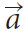
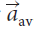
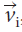
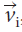

Equations of Motion
One-Dimensional Motion with Constant Acceleration
The defining equation for average acceleration is

In this section and for all our equations of motion, the acceleration is constant, so we will use the symbol  for .
The displacement of an object is equal to the area under the line on a velocity–time graph. For constant acceleration, this shape is a trapezoid.

The picture shows a velocity–time graph for an object with constant acceleration. The object starts with initial velocity  accelerates for a time 𝚫t with accelerationand ends with final velocityThe displacement is equal to the area under the line. The shape under the line is a trapezoid, and its area is
accelerates for a time 𝚫t with accelerationand ends with final velocityThe displacement is equal to the area under the line. The shape under the line is a trapezoid, and its area is

Notice that the above equation does not use the variable . This means we can combine it with the defining equation for average acceleration to derive other useful equations.
The Five Key Equations for Uniformly Accelerated Motion

Free Falling Objects

free fall the motion of a falling object where the only force acting on the object is gravity
When you let go of a ball, it will fall down because Earth’s gravity pulls it down. When you throw a ball upward, it will move upward for a time, stop, change direction, and then move downward. In both cases, the ball is moving under the influence of gravity. An object that is only moving under the influence of gravity is said to be in free fall.
Examples
-
Solving for Time and Final Velocity
Two cars are at rest on a straight road. Car A starts 120m ahead of car B, and both begin moving in the same direction at the same time. Car A moves at a constant velocity of 7.0 m/s [forward]. Car B moves at a constant acceleration of 2.0 m/s2 [forward]. Calculate how long it will take for car B to catch up with car A, and calculate the velocities of the two cars when they meet.
-
Solving for Time and Displacement
A motorcyclist drives along a straight road with a velocity of 30.0 m/s [forward]. The driver applies the brakes and slows down at 5.0 m/s2 [backward].
(a) Calculate the braking time.
(b) Determine the braking distance (displacement).
Using the Equations of Motion for Accelerated Motion Due to Gravity
Calculating Time and Velocity
A ball is thrown from a height of 52 m from the top of a building with a velocity of 24 m/s straight up.
(a) Determine the velocity of the ball at ground level.
(b) How long does it take for the ball to reach the ground?